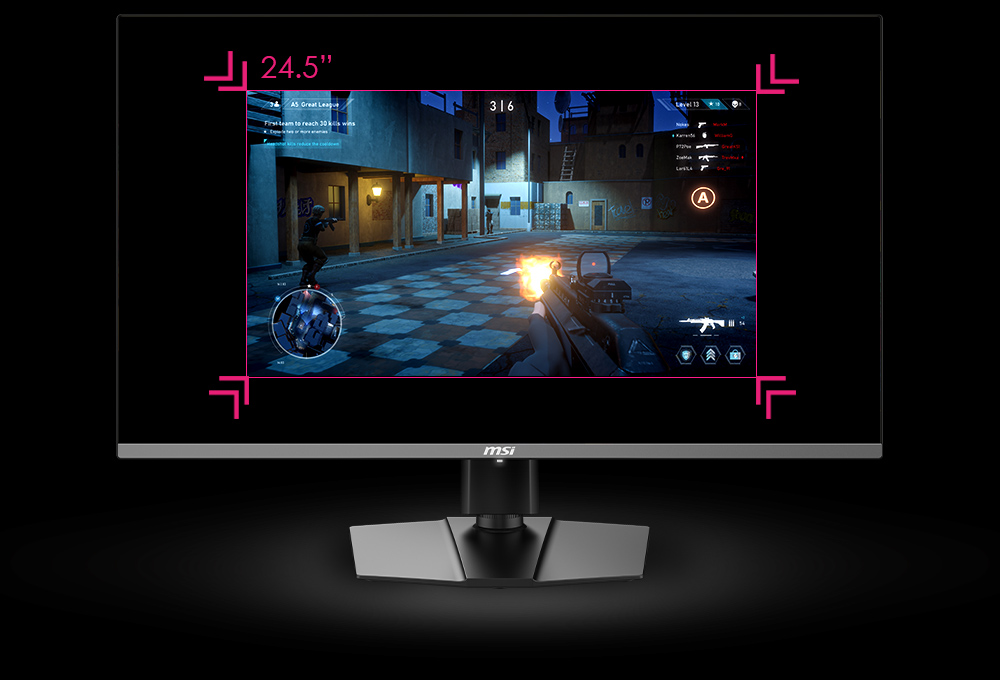

MSI MEG 321 RUX
monitor gamingowy

Matt
20.09.2024
MSI MEG 321 RUX
Sprzęt
MSI MEG 321 RUX to 32-calowy monitor do gier 4K Mini-LED przeznaczony dla poważnych graczy, którzy wymagają tego, co najlepsze. Dzięki wysokiej jakości wyświetlaczowi, szybkiemu czasowi reakcji i zaawansowanym funkcjom monitor ten został zaprojektowany tak, aby zapewnić wciągające wrażenia z gry.
MEG 321 RUX ma 32-calowy wyświetlacz 4K Mini-LED o rozdzielczości 3840 x 2160 pikseli. Wyświetlacz zapewnia żywe kolory, wysoki kontrast i szybki czas reakcji, dzięki czemu doskonale nadaje się do gier, edycji wideo i innych zadań wymagających dużej ilości grafiki.
Monitor obsługuje HDR10 i HDR10+, zapewniając szerszą gamę kolorów i żywsze kolory. Monitor obejmuje również 95% przestrzeni kolorów DCI-P3, dzięki czemu nadaje się do profesjonalnej pracy graficznej.
Monitor MEG 321 RUX oferuje szereg opcji łączności, w tym HDMI 2.1, DisplayPort 1.4 i USB 3.2 Gen 2. Monitor ma również wbudowany koncentrator USB z dwoma portami USB-A i jednym portem USB-C.
Monitor ma regulowaną wysokość, nachylenie i obrót, co zapewnia komfortowe oglądanie. Monitor ma również wbudowany system zarządzania kablami, dzięki czemu miejsce pracy jest uporządkowane i wolne od bałaganu.
MEG 321 RUX ma aplikację Gaming OSD firmy MSI, która zapewnia szereg funkcji do gier, w tym konfigurowalne celowniki, liczniki FPS i asystenta ekranu. Monitor obsługuje również NVIDIA G-Sync i AMD FreeSync, zapewniając płynne wrażenia z gry.
Plusy
- Wysoka jakość 4
- Szybka odpowiedź
- Zaawansowany HDR i gama kolorów
- Zakres
- Nastawny
Minusy
- Ograniczona możliwość regulacji pod względem obrotu i obrotu
- Drogi